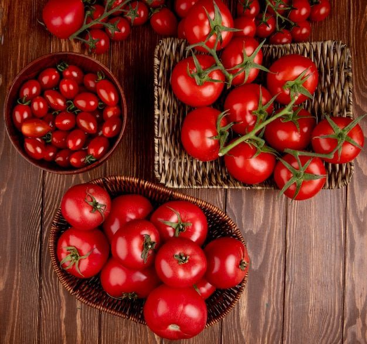

🍅 Tomate
🌱 Como cultivar
O tomateiro prefere clima quente e ensolarado, com pelo menos 6 horas de sol direto por dia. O solo deve ser fértil, bem drenado e rico em matéria orgânica. Regue de forma regular, evitando molhar as folhas para prevenir doenças fúngicas. É importante usar estacas ou suportes para sustentar a planta. A colheita costuma ocorrer 90 a 120 dias após o plantio, quando os frutos estão firmes e vermelhos.
🍽️ Receitas
💡 Curiosidade
Botanicamente, o tomate é uma fruta! O tomate já foi considerado venenoso na Europa porque algumas pessoas confundiam suas folhas com plantas tóxicas.